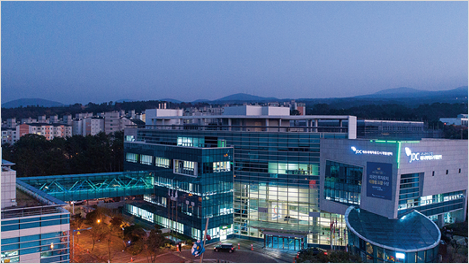
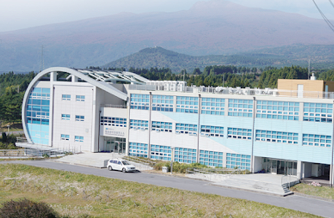
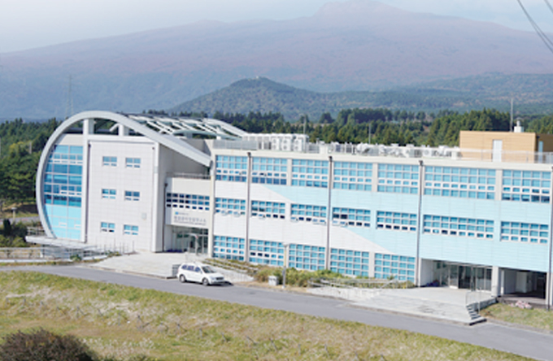
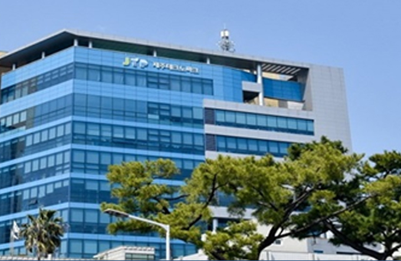
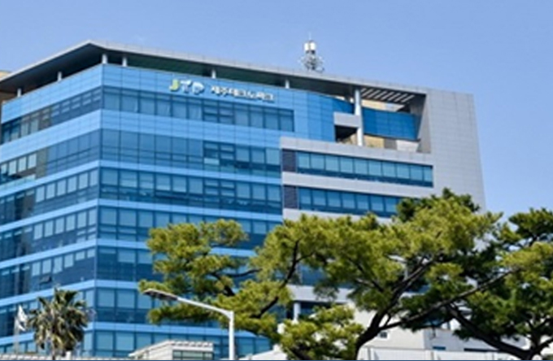

支持机构信息
- Home
- 投资环境
- 支持机构信息
济州支持机构信息

济州特别自治道厅观光局招商引资科

- 地址 : （邮编：63122)济州特别自治道济州市文渊路6号（莲洞） / 6, Munyeon-ro, Jeju-si, Jeju-do, 63122
- 咨询 : +82-64-710-3372 ~ 5 / zheng@korea.kr
该部门负责制定国际自由城市——济州的招商引资政策以及开展国内外招商引资活动。
为国内外投资者提供综合管理服务，包括投资咨询、奖励提供以及投资者成功投资后的管理服务等，
观光局招商引资科
-
投资政策组
- 制定投资政策
- 投资振兴地区
- 外商投资地区
- 房地产投资移民制度管理
-
招商引资组
- 吸引和宣传韩国企业
- 向韩国企业提供投资奖励
- 吸引和宣传外商投资
- 向外商企业提供投资奖励
-
观光地开发组
- 批准及管理旅游开发项目
-
游园区开发组
- 批准及管理游园区开发项目

济州特别自治道厅未来战略局
- 地址 : （邮编：63125）济州特别自治道济州市新大路64号
- 官方网站 : https://www.jeju.go.kr/group/part29/dept/org.htm
济州特别自治道厅未来战略局
-
低碳政策科
- 建设无碳岛屿——CFI2030项目
- 公共主导型海上风力项目
- 建设能源自立村
- 发展和普及电动车相关产业
-
未来战略科
- 针对济州第4次产业革命，建设产业生态系统
- 运营济州第四次产业革命基金
- 发展ICT新产业
- 发展区块链产业
- 发展济州化妆品产业
- 扶持新技术初创企业
- 推动微生物资源商业化
-
数字融合科
- 建设大数据产业生态系统
- 建设济州数据中心
- 构建基于数据的物联网平台
- 智能无人机
- 采用无人机监管沙盒&指定特别自由化区域
- 培育及扶持ICT企业

济州国际自由城市开发中心(Jeju Free International City Development Center)
济州国际自由城市开发中心是下属国土交通部的国有企业，是一所济州国际自由城市建设专门机构。
该机构旨在推进建立尖端科学、旅游、教育、医疗、无烟产业等国际自由城市核心产业。

- 济州国际自由城市开发中心 官方网站 : https://www.jdcenter.com
济州能源公社
济州能源公社是一家国营企业，利用济州无限的环保能源，推进可再生能源基础设施建设、生产、运营、供应以及研发，以促进公共主导的可再生能源事业发展。
该企业专门负责“零碳岛2030“（CARBON FREE ISLAND 2030）的核心项目，以促进济州能源自给自足。

- 济州能源公社 官方网站 : https://www.jejuenergy.or.kr

-
 东北·北村风力发电基地
东北·北村风力发电基地
-
 利用公共设施的太阳能发电基地
利用公共设施的太阳能发电基地
-

 新昌风力发电基地
新昌风力发电基地
-

 金宁风力发电基地
金宁风力发电基地
-

 杏源风能·太阳能发电基地
杏源风能·太阳能发电基地
及新再生能源宣传馆 -
 加时里风力发电及桥来里太阳能发电基地
加时里风力发电及桥来里太阳能发电基地
济州特别自治道开发公社(JPDC)
济州国有企业，开发济州地下水，生产大韩民国矿泉水市场第一品牌“三多水“。

- 济州特别自治道开发公社 官方网站 : http://www.jpdc.co.kr
济州特别自治道开发公社主要项目
饮用矿泉水项目
- 韩国矿泉水市场市占率42%，高居首位
- 韩国饮用矿泉水第一品牌<三多水>
- 运营年产量83万吨级工厂和研发中心

柑橘加工项目
- 运营济州柑橘浓缩液加工厂（日产能为700吨）
- 开发[济州三多水柑橘果汁] 品牌
研究开发项目
- 济州地下水保护、管理及质量研发项目
公共住宅项目
- 面向济州岛居民开展住宅租赁项目

※ 相关链接 : http://www.jpdc.co.kr/samdasoo/index.htm
济州科技园 (Jeju Techno Park)
这是一家为济州产业及企业发展提供解决方案的机构，包括企业所需的技术开发、商业化支持、市场营销、人员培养等。
提供济州多种产业信息以及技术开发、企业支持项目等企业所需服务和信息。

- 济州科技园 官方网站 : http://www.jejutp.or.kr
济州科技园运营设施信息
-

 生物融合中心
生物融合中心
- 为济州清净化妆品及食品商业化提供支持。
-

 数字融合中心
数字融合中心
- 支持济州ICT企业
- 运营济州大数据中心
-

 熔岩海水商业化支持中心
熔岩海水商业化支持中心
- http://www.jejulavawater.com
-
 
生物多样性研究所

生物多样性研究所
- 研究济州亚热带生物资源的商业化
-

 能源融合中心
能源融合中心
- 支持济州ICT企业
- 运营济州大数据中心
-
 
总部

总部
- 支持济州企业及培育产业
济州创造经济革新中心 (JEJU Center for Creative Economy & Innovation)
济州首个专门负责济州创业企业生态系统的创业企业援助机构。
该机构提供济州创业企业投资支持相关信息。

- 济州创造经济革新中心 官方网站 : http://jccei.kr
主要项目
- 支持初创企业入驻及孵化
- 运营孵化项目
- 种子资金投资项目
- 提供居留支持项目、远程工作项目
- 常年运营创业支持及培训项目